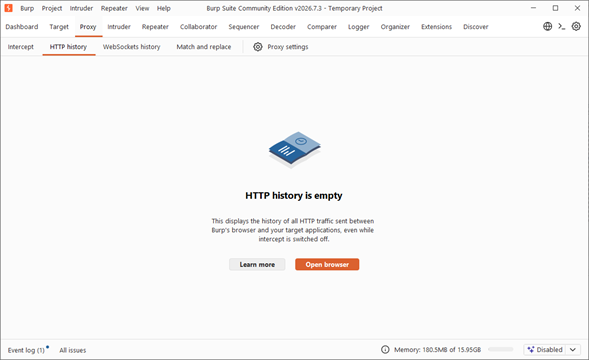
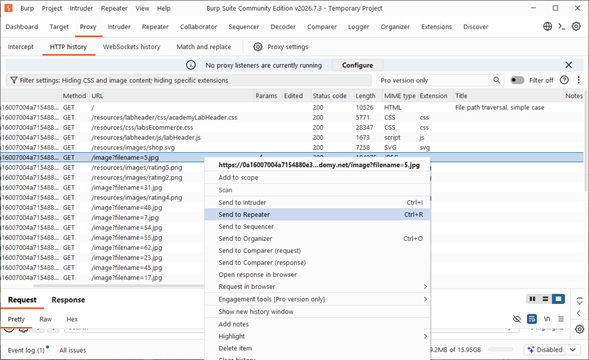
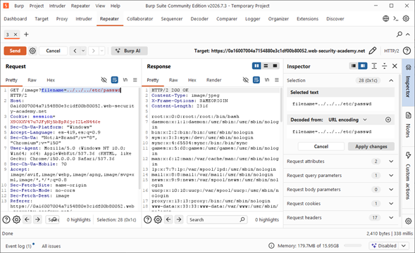
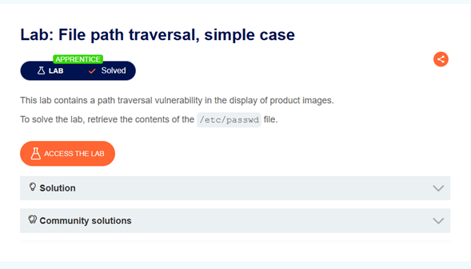

Ficha Técnica
Actividad 07: Lab: File path traversal, simple case
Laboratorio de evaluación ofensiva centrado en la explotación de secuencias de escape de directorio (Directory Traversal) en un entorno de PortSwigger sin mecanismos de sanitización.
Dificultad: Apprentice
Vulnerabilidad: CWE-22 (Improper Limitation of a Pathname to a Restricted Directory)
Identificar la falta de sanitización en el parámetro de carga de imágenes y evadir la restricción del directorio base mediante secuencias relativas (../) para exfiltrar el archivo /etc/passwd.
Marco Teórico
Fundamentación de la Vulnerabilidad
Según el estándar OWASP Top 10:2021, esta falla se clasifica como A01:2021 - Broken Access Control. Ocurre cuando el backend concatena directamente la entrada de un usuario (ej. filename=producto.jpg) a un directorio base (ej. /var/www/images/) sin validar la presencia de caracteres especiales de navegación jerárquica.
El carácter .. (punto doble) asciende al directorio padre. Por diseño del núcleo de Linux, intentar subir un nivel desde el directorio raíz (/..) ancla el puntero en la propia raíz /. Esto permite inyectar secuencias redundantes masivas (ej. ../../../../../../) con la certeza de aterrizar en la raíz antes de descender al directorio deseado como etc/passwd.
Procedimiento
Fase 1: Configuración e Interceptación
Se accedió a la plataforma Web Security Academy para desplegar la instancia dinámica. Utilizando Burp Suite Community Edition, se configuró el entorno de auditoría iniciando el navegador integrado mediante la pestaña Proxy > HTTP history, garantizando la intercepción pasiva de todo el tráfico.

>_ Evidencia 02: Preparación del módulo Proxy e historial HTTP para capturar la navegación sobre el objetivo comercial "WE LIKE TO SHOP".
Fase 2: Mapeo y Aislamiento del Parámetro
Al inspeccionar el tráfico en el historial, se identificó que la carga de recursos multimedia operaba mediante un parámetro GET no sanitizado. Se envió la solicitud vulnerable (GET /image?filename=5.jpg HTTP/2) al módulo Repeater (Ctrl+R) para su análisis exhaustivo.

>_ Evidencia 04: Selección de la petición de extracción de imágenes y envío al módulo Repeater para manipulación.
Fase 3: Inyección del Payload y Exfiltración
Dentro de Repeater, se reemplazó el valor estático del parámetro filename por la secuencia de escape de directorios: ../../../etc/passwd. Al enviar la petición modificada, el servidor devolvió un código HTTP/2 200 OK que exponía el contenido del archivo administrativo del sistema Linux subyacente.

>_ Evidencia 06: Módulo Repeater mostrando la inyección (izquierda) y la exfiltración íntegra de cuentas del sistema como root y www-data (derecha).
Fase 4: Confirmación del Compromiso
La extracción exitosa de /etc/passwd cumplió con las condiciones de evaluación del entorno, confirmando el compromiso de lectura arbitraria en la máquina objetivo.

>_ Evidencia 07: El banner de la plataforma Web Security Academy se actualiza a color verde confirmando el estado "Lab Solved".
Análisis Téc.
Mecánica del Payload de Evasión
GET /image?filename=../../../etc/passwd HTTP/2
Host: 0a2400ab03dab9fe...web-security-academy.net
Accept: image/webp, image/apng, image/*
Sec-Fetch-Site: same-originDefensa en Profundidad y Remediación
No deben pasarse datos enviados por el usuario de forma directa a las APIs del sistema de archivos. Si es estrictamente necesario, verificar la entrada contra una lista blanca rígida o aplicar una expresión regular alfanumérica limitante (ej. ^[a-zA-Z0-9_-]+\.(jpg|png)$).
Antes de interactuar con el descriptor de archivo, el backend debe resolver la ruta absoluta real utilizando APIs nativas (como realpath() en PHP o getCanonicalPath() en Java) y verificar que esta ruta comience inequívocamente dentro del directorio base designado.
Asegurar que el proceso del servidor web (www-data) cuente exclusivamente con permisos de lectura en el directorio de la aplicación, y encapsular la ejecución mediante chroot jails, contenedores Docker o políticas estrictas de SELinux / AppArmor para bloquear el acceso a la raíz del host.